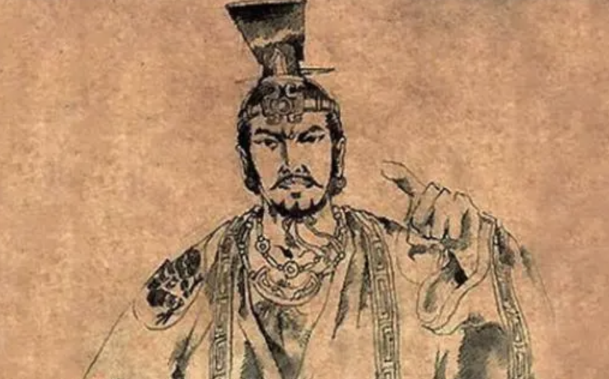

用一国换一人“情深似海”，却骄奢淫逸强征暴敛终国破家亡
发布时间: 2023-05-21 2644 次浏览
-
商纣王（约公元前1046年-约公元前1043年在位）是中国商朝的最后一位君主，也是商朝的灭亡者。他以奢侈荒淫和残暴暴虐著称，被历史学家称为“暴君”。以下将从他的早期生活、即位以及政治统治和灭亡四个方面进行介绍。
早期生活：商纣王出生于商朝的最后一个时期，他的父亲是商王辛。据传说，纣王小时候就表现出了残忍和放荡的性格。他从小喜欢饮酒作乐，好色成性，并经常虐待仆人。纣王继位后，他继承了父亲的王位，但却没有继承他父亲的明智和谨慎。
即位和政治统治：纣王统治期间，他变本加厉地过着奢侈生活，并且通过高压手段来镇压国内政治异议。他还任意妄为，杀害贤臣，甚至活埋自己的妃子。在他的统治下，国家日益衰败，百姓苦不堪言。为了维护自己的统治，纣王还采取了残酷的刑法，例如剖腹育虫、烧烤活人等惨无人道的方式。他苛待百姓，破坏社会秩序，使得商朝逐渐走向灭亡。
灭亡：纣王的残暴行径引起了周武王的不满。周武王在得到商朝内部反叛者的帮助后，率领大军攻打商朝，并在牧野之战中击败了纣王和商军。纣王被迫逃至牛首山，最终在那里遭到了杀害，标志着商朝的灭亡。
评价总结：从历史上来看，商纣王的统治是中国历史上的一个黑暗时期。他的暴虐行径造成了商朝的灭亡，也给中国历史留下了一个极其恶劣的印记，留下了一个悲惨的历史遗产。
此外，商纣王的故事也告诉我们，一个人的品质和行为对他的个人命运和社会地位都有着重要的影响。而一个国家的命运取决于其领导人的品质和行为，纣王的残暴和无恶不作的行径导致了他最终的失败和灭亡。而相反，在历史上那些伟大的领袖和统治者，都是以正直、公正和谦虚的品质著称，因为他们的品质和行为所带来的信任和尊重，是支撑他们成功统治的重要基石。
因此，我们应该以史为戒，商纣王的故事并不仅仅是一段过去的历史，它也提供了对当今社会的启示。在我们生活的当下，仍然存在着一些不负责任、自私自利、残暴无情的行为，这些行为将导致巨大的社会灾难。因此，我们每个人都有责任和义务，以道德准则为指引，努力成为一个品德高尚、行为端正的人，为社会的进步和发展做出自己的贡献。
黄河文化旅游宣传平台
联系电话: 17753010787
版权所有：山东大学技术团队
技术支持：山东大学技术团队